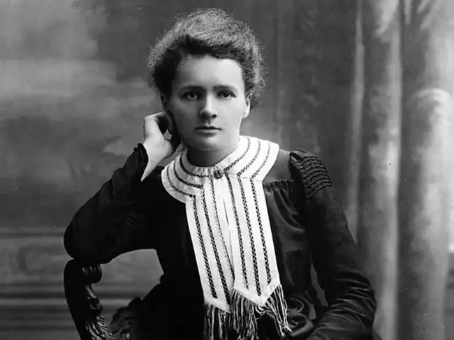

Some quotes stay with us because they also show our own struggles, and Marie Curie’s powerful words are one such example. Her reminder that life is challenging yet conquerable has once again gone viral, especially among young readers searching for purpose. She wasn’t just giving motivational advice, she was speaking from a lifetime shaped by barriers, breakthroughs and unimaginable resilience.
Marie Curie once said, “Life is not easy for any of us. But what of that? We must have perseverance and, above all confidence in ourselves. We must believe that we are gifted for something and that this thing must be attained.” It’s a message that feels almost tailor-made for today’s world, where pressure, distraction and uncertainty are constant companions. But these words weren’t a simple pep talk, they showcased her lived experience as one of the greatest scientific pioneers in history.
Curie, born Maria Salomea Skłodowska-Curie on 7 November 1867, grew up in Warsaw during a time when the Kingdom of Poland was under Russian rule. Educational opportunities for women were restricted, yet she pushed forward through Warsaw’s clandestine Flying University, showing early signs of the perseverance she would later speak so openly about. Her quiet determination laid the foundation for a career that would redefine modern science.
At just 24, she moved to Paris in 1891 to continue her studies, joining her sister Bronisława. There, Marie immersed herself in scientific training and eventually met Pierre Curie, whom she married in 1895. Their collaboration would change the world.
When she later urged people to "believe that we are gifted for something," she was talking about the years of research conducted under harsh conditions, with limited resources, and with a level of dedication many described as almost superhuman. Marie Curie’s achievements remain unmatched. She became the first woman to win a Nobel Prize, the first person ever to win two Nobel Prizes, and the only individual to earn Nobel honours in two different scientific fields.
Her first Nobel Prize, shared with Pierre Curie and Henri Becquerel in 1903, recognised their groundbreaking work on radioactivity, a term she herself coined.
In 1911, she earned her second Nobel Prize for discovering polonium, named after her homeland Poland, and radium, using techniques she personally developed for isolating radioactive isotopes. Her work wasn’t just academic. Under her leadership, the world saw the first use of radioactive isotopes for treating neoplasms. She later established the Curie Institute in Paris (1920) and the Curie Institute in Warsaw (1932), both of which continue to be major centres of medical research.
Even during World War I, her sense of responsibility pushed her beyond the laboratory. She developed mobile radiography units to provide X-ray services to field hospitals, personally travelling to battle zones. When she spoke of perseverance, she embodied it.
Despite becoming a French citizen, Marie Curie never detached from her Polish identity. She taught her daughters Polish, took them to visit Poland, and honoured her heritage by naming polonium after her homeland.
Marie Curie passed away in 1934 at the age of 66 from aplastic anaemia, likely caused by prolonged exposure to radiation. Yet she remained celebrated long after her death, becoming the first woman to be buried on her own merit in the Paris Panthéon in 1995. Poland even declared 2011 the Year of Marie Curie during the International Year of Chemistry.
When she said that “life is not easy,” she wasn’t exaggerating. Marie Curie lived through political turmoil, gender discrimination, poverty, intense research conditions and a devastating personal loss when Pierre Curie died in 1906. Still, she kept going, because she believed there was something she was meant to achieve.
And that’s exactly what her iconic quote leaves us with today: it's a cue that difficulties don’t define us. What defines us is the confidence to keep moving toward the thing we’re meant to accomplish, just as she did.